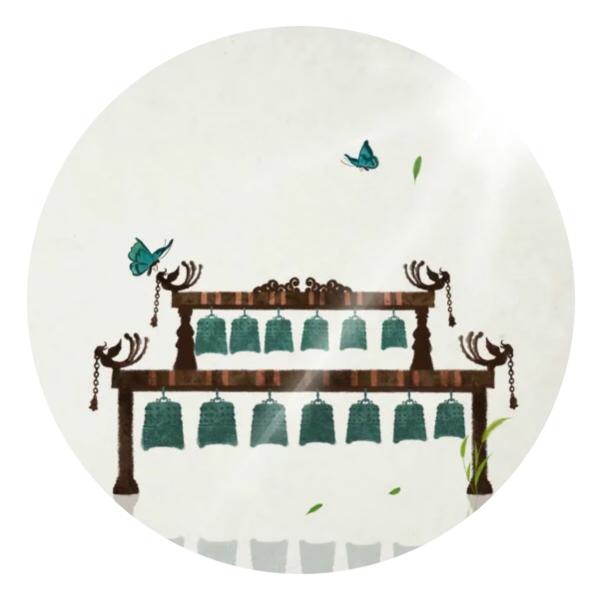
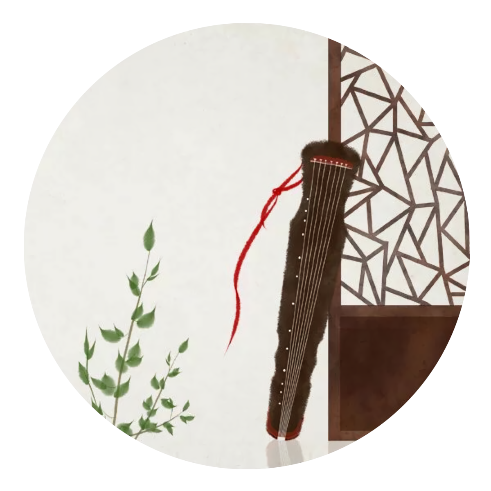
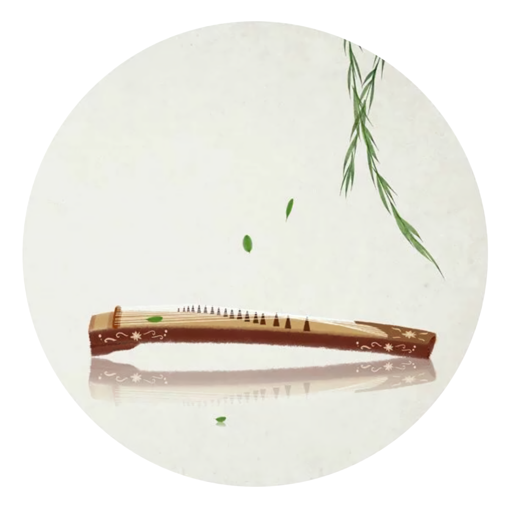
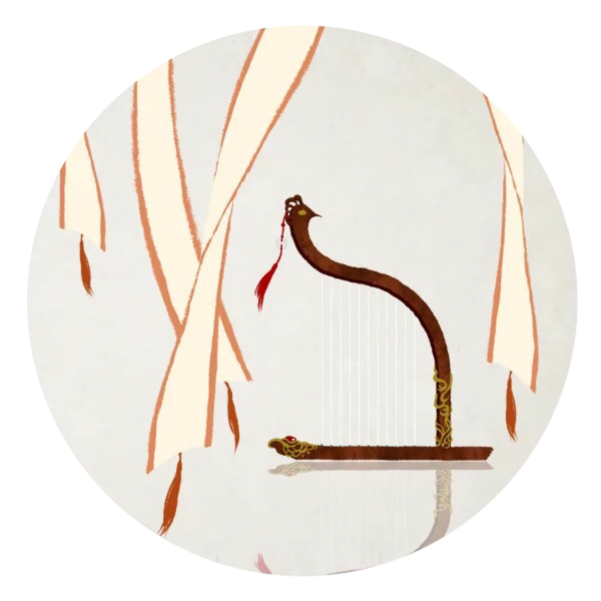

《题破山寺后禅院》
【唐】常建
清晨入古寺，初日照高林。
曲径通幽处，禅房花木深。
山光悦鸟性，潭影空人心。
万籁此都寂，但余钟磬音。
编钟是中国古代重要的打击乐器，是钟的一种。编钟兴起于西周，盛于春秋战国直至秦汉。编钟由若干个大小不同的钟有次序地悬挂在木架上编成一组或几组，每个钟敲击的音高各不相同。由于年代不同，编钟的形状也不尽相同，但钟身都绘有精美的图案。
《寄鲁漕》
【宋】吴芾
四海耆英世共知，七旬强健似公稀。
使星姑暂淹黄发，卿月还须近紫微。
门外埙篪方合奏，庭前兰玉更相辉。
人生乐事谁能及，莫惜通宵寿斚飞。
埙 【xūn】是中国最古老的吹奏乐器之一。埙是闭口吹奏乐器，音色朴拙抱素独为天籁，在世界原始艺术史中占有重要地位。

《听弹琴》
【唐】刘长卿
泠泠七弦上，静听松风寒。
古调虽自爱，今人多不弹。
古琴，又称瑶琴、玉琴、丝桐和七弦琴，是中国汉族传统拨弦乐器，有三千年以上历史，属于八音中的丝。古琴音域宽广，音色深沉，余音悠远。
《与史郎中钦听黄鹤楼上吹笛》
【唐】李白
一为迁客去长沙，西望长安不见家。
黄鹤楼中吹玉笛，江城五月落梅花。
笛子 ，是古老的汉族乐器，也是汉族乐器中最具代表性最有民族特色的吹奏乐器。中国传统音乐中常用的横吹木管乐器之一，中国竹笛，一般分为南方的曲笛、北方的梆笛、和介于两者之间的中笛。

《听筝》
【唐】李端
鸣筝金粟柱，素手玉房前。
欲得周郎顾，时时误拂弦。
古筝又名汉筝、秦筝、瑶筝、鸾筝，是民族传统乐器中的筝乐器，属于弹拨乐器。它是中国独特的、重要的民族乐器之一。古筝是一件伴随中国悠久文化，在这肥沃的黄土地上土生土长的古老民族乐器。
《凤凰曲》
【唐】李白
嬴女吹玉箫，吟弄天上春。
青鸾不独去，更有携手人。
影灭彩云断，遗声落西秦。
排箫 是把若干支同种材质的音管，用粘接、捆绑、或框架固定的方式把它们结合成一个整体乐器，排箫的音色纯美，轻柔细腻、空灵飘逸。
中国有这样传说：华夏先祖黄帝曾命乐官伶伦制作乐器，他用竹做了“参差”，这种乐器是由长短不一的竹管组成，所以人们都说“参差不齐”。“参差”实际上就是说的排箫。

《李凭箜篌引》
【唐】李贺
吴丝蜀桐张高秋，空山凝云颓不流。
江娥啼竹素女愁，李凭中国弹箜篌。
昆山玉碎凤凰叫，芙蓉泣露香兰笑。
十二门前融冷光，二十三丝动紫皇。
女娲炼石补天处，石破天惊逗秋雨。
梦入神山教神妪，老鱼跳波瘦蛟舞。
吴质不眠倚桂树，露脚斜飞湿寒兔。
箜篌 【kōng hóu】 是中国古代的弹弦乐器。最初称“坎侯”或“空侯”，在古代除宫廷雅乐使用外，在民间也广泛流传，在古代有卧箜篌、竖箜篌、凤首箜篌三种形制。从十四世纪后期不再流行，以致慢慢消失，只能在以前的壁画和浮雕上看到一些箜篌的图样。
《临江仙·梦后楼台高锁》
【宋】晏几道
梦后楼台高锁，酒醒帘幕低垂。去年春恨却来时。落花人独立，微雨燕双飞。
记得小苹初见，两重心字罗衣。琵琶弦上说相思。当时明月在，曾照彩云归。
琵琶 ，是东亚传统弹拨乐器，已有两千多年的历史。最早被称为“琵琶”的乐器大约在中国秦朝出现。“琵琶”二字中的“珏”意为“二玉相碰，发出悦耳碰击声”，表示这是一种以弹碰琴弦的方式发声的乐器。